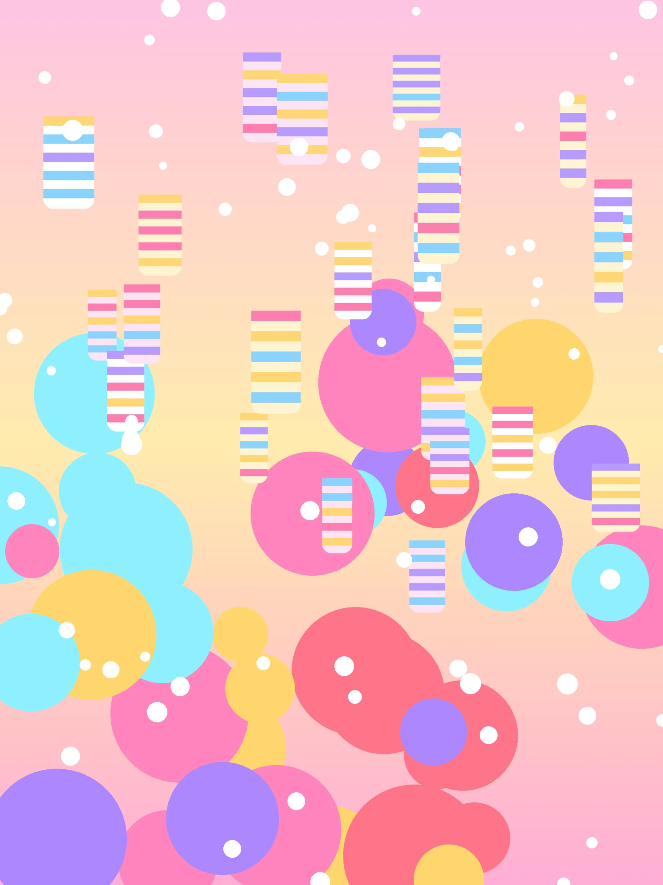

Short sessions, adaptive placement, visible progress, and deterministic correction after repeated misses.
Native iOS / offline first / product restraint
Sprout Math
Children need clear math practice, and parents need control over their data. I built Sprout Math around short offline sessions, on-device progress, and predictable hints.
Native iOS productOffline practice
- Customer
- Children and parents
- Scope
- Independent 0→1 build
- Platform
- Native iOS
- Privacy
- No accounts
- Decision
- Keep progress, content, hints, and diagnostics on device with no account requirement.
- Why
- A child-focused first release needs predictable help, fast sessions, and a small privacy surface.
- Result
- An offline native math product with a working practice loop and local progress.
Quick readRestraint
Product restraint carries the value.
Kids apps lose trust when they lag, require accounts, push subscriptions, or bury parents under settings. Sprout Math keeps the core loop local, the hints deterministic, and the session design short enough to remain calm.
Parent-gated settings, local diagnostics export, no ads, no accounts, no surprise network dependency.
A bundled K–5 practice curriculum, deterministic hints, narration, and six visual worlds. See the live product site for the current content inventory.
Core Data persistence for profiles, attempts, mastery, history, and progress state vectors.
VisualsEvidence
The look is playful. The system underneath is controlled.



ArchitectureOffline
Offline-first product architecture is a trust decision.
Local state
Core Data
Profiles, attempts, mastery, lesson state, stickers, and history remain on device.
Learning loop
Deterministic hints
3-tier hint logic and correction flow avoid opaque tutoring behavior.
Content
Template bank
Question variety comes from maintained templates, not remote generation.
Trust
No account loop
Children can practice without accounts, ads, analytics, or subscriptions.
DecisionsScope
Most of the hard decisions were about boundaries.
Practice stays repeatable and parent-friendly.
Reducing layout modes protects quality in a first version.
Kids products need predictable help before cleverness.
Diagnostics can exist without turning a child product into a tracking surface.